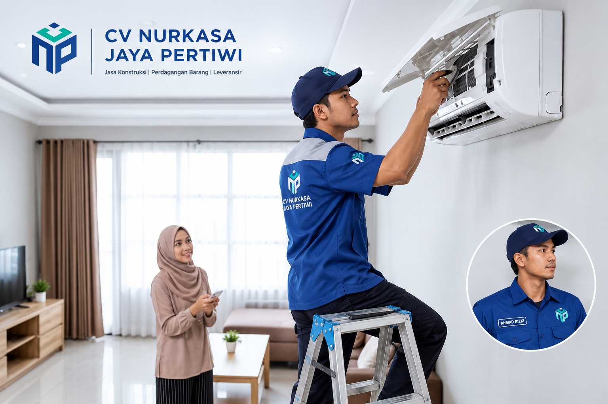

Service AC
01
Ruang Lingkup Service
Pembersihan dan pemeriksaan menyeluruh untuk menjaga AC tetap dingin, bersih, hemat energi, dan siap digunakan.
- Cuci condenser, filter, evaporator, dan cover AC.
- Pengecekan kelistrikan dan fungsi unit.
- Pengujian setelah pencucian AC.